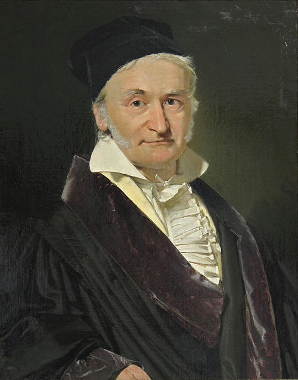

1777–1855
German
Number theory, algebra, analysis, astronomy, geodesy
Gauss was a child prodigy from a working-class family in Brunswick. The famous story — summing the integers from 1 to 100 as a schoolboy by pairing $1+100, 2+99, \ldots$ — captures his characteristic approach: find the structure, then the calculation becomes trivial.
His Disquisitiones Arithmeticae (1801), published when he was 24, essentially created modern number theory. It systematised modular arithmetic, proved the Fundamental Theorem of Arithmetic rigorously, classified binary quadratic forms, and proved the constructibility of the regular 17-gon. The book set the standard for mathematical rigour that would define the 19th century.
Gauss gave four proofs of the Fundamental Theorem of Algebra across his career. His doctoral thesis (1799) gave the first, though it relied on geometric intuition. Later proofs used increasingly algebraic methods. His lemma on irreducibility — that a polynomial irreducible over $\mathbb{Z}$ stays irreducible over $\mathbb{Q}$ — remains a fundamental tool in algebra.
In applied mathematics, Gauss predicted the orbit of the asteroid Ceres from just a few observations using the method of least squares (1801), making him famous across Europe. He went on to major contributions in geodesy, electromagnetism, and optics. His motto was pauca sed matura — "few but ripe" — and he notoriously withheld results until he deemed them perfect, causing priority disputes with Legendre and others. He spent his entire career at Göttingen, turning it into the world's leading mathematical centre.
| Phase | Page | Referenced for |
|---|---|---|
| Phase 1 | Prime Numbers and the Fundamental Theorem of Arithmetic | First rigorous proof of unique factorisation |
| Phase 1 | Modular Arithmetic | Published Disquisitiones Arithmeticae (1801) |
| Phase 1 | The Chinese Remainder Theorem | CRT treatment in the Disquisitiones |
| Phase 1 | Diophantine Equations | Gauss's lemma used in proof |
| Phase 6 | Vector Spaces | Developed Gaussian elimination (1810s) |
| Phase 6 | Linear Maps and the Rank-Nullity Theorem | Underlying ideas trace back to Gauss |
| Phase 6 | Matrices and Change of Basis | Used coefficient tables for elimination |
| Phase 6 | Orthogonal Projection | Discovered least squares (1795) to predict orbit of Ceres |
| Phase 7 | Multiple Integrals and Fubini's Theorem | Gaussian integral via polar coordinates |
| Phase 7 | The Divergence Theorem and Stokes' Theorem | Stated divergence theorem (1813) |
| Phase 10 | Rings and Polynomial Division | Analogy between integer and polynomial arithmetic |
| Phase 10 | Irreducibility and the Fundamental Theorem of Algebra | Four proofs of FTA; Gauss's lemma |
| Phase 12 | Conditional Expectation as Projection | Linear regression (1809) |
| Phase 13 | Bilinear Forms | Classification of binary quadratic forms in Disquisitiones (1801) |
| Phase 13 | Quadratic Forms and Sylvester's Law of Inertia | Completing the square (Gauss's method) |
| Phase 13 | The Principal Axis Theorem | Gaussian elimination for Cholesky factorisation |